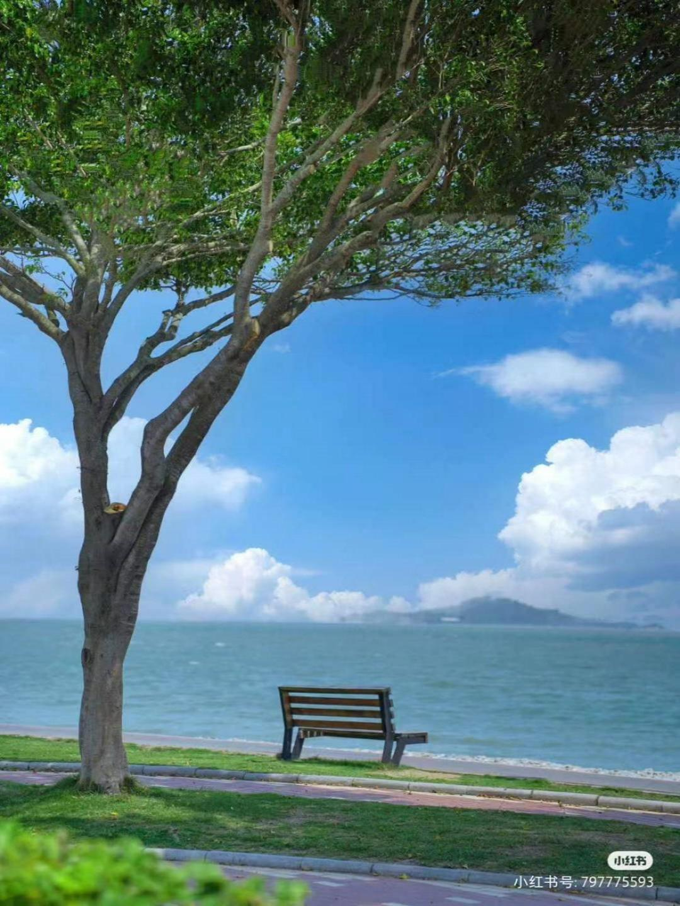
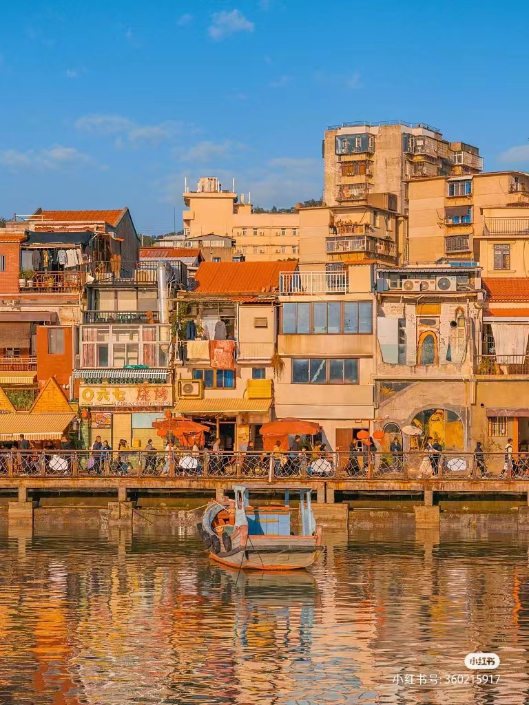

关于浪漫,海占一半
欢迎来到厦门的美景篇！
让我们一同来领略厦门著名景点的风貌吧~
(点击图片下方文字可跳转)
|
|
|
|||
| 鼓浪屿 | 白城沙滩 | |||
|
|
|
|||
| 厦门大学 | 沙坡尾 |
···鼓浪屿···
鼓浪屿，原名“圆沙洲”，别名“圆洲仔”，南宋时期命“五龙屿”，
自明朝雅化为今名称“鼓浪屿”，位于福建省厦门市思明区鼓浪屿街道，
鼓浪屿岛上海礁嶙峋，岸线迤逦，山峦叠翠，峰岩跌宕，鼓浪屿以建筑为表，音乐为魂。
|
|
|
|
||||
这座被称为「海上花园」的岛中之岛，建筑精美，琴声悠扬。
屿上2万人口，居民热爱音乐，钢琴拥有率居全国前茅，还被称为「琴岛」。
Tips:
船票
船票预约: 小程序-屿见厦门 (可提前10天)
船票含往返，回程不需要再次购票游客日间航线有三条:
邮轮中心厦鼓码头一三丘田码头 (35元 )
邮轮中心厦鼓码头一内厝澳码头 (50元)
第一码头一内厝澳码头 (50元，1小时一班)
如果要去打卡网红景点推荐到达三丘田码头!离大部分景点更近
注意事项:
⚪去鼓浪屿的船票按照购票时间点准到达哦，需提前候船检票，刷身份证检票。
|
|
|
|
||||
···白城沙滩···
厦大白城位于厦门大学南部白城脚下，为演武大桥与胡里山炮台之间的一片美丽的沙滩。
不仅是厦大学子，更多的厦门市民和游客喜欢到此漫步、游戏、游泳和观赏夕阳，这里是天然的休闲公园。
厦大白城还有许多有趣的景致，半环型天桥犹如巨大的时钟，白城遗址上雕刻着各种抽象的方形图案……融合美丽景色与深厚的文化历史底蕴于一体。
|
|
|
|
日落时分，白色海浪冲击着礁石，天上挂个咸蛋黄，潋滟的橘子海波光粼粼。
海岸边有游人钓落日，有靓女摆pose，有新人拍婚纱照......
|
海边活动： ①踩水 |
拍照点位： ①岸边礁石 |
|

|
|
|
···厦门大学···
依山傍海·花园学府·面朝大海
面朝大海、内拥芙蓉湖，棕榈树林荫道贯穿其中，是名符其实的山海花园、浪漫之地。
体验百年学府的深厚积淀，感受百年名校的底蕴和气质，漫步在山海之间，领悟“自强不息，止于至善”的真谛。
|
|
|
|
漫步于此，感受一种静谧而美好的氛国，既有历史的厚重感，也有现代的活力与朝气。
“致吾知于无央，充吾爱于无疆。”
预约流程：
关注“厦门大学访客预约系统”微信公众号-点击“参观预约”进行预约界面
(需实名，每人最多可添加4名同行人员)
预约开放时间：
开放预约时间为每天8:00，12:00，16:00，不接受现场预约。
预约至少提前1天、最多可提前3天(准点抢会比较容易抢到哦)
|
|
|
|
···沙坡尾···
沙坡尾历史悠久，这里曾是厦门港的发源地。
自宋代以来就是渔民们停泊渔船的地方，不仅见证了郑成功收复台湾的英雄壮举，也承载了厦门港口城市工业文明的记忆。
“老厦门遇见新文艺”，沙坡尾是个“左手传统，右手新潮”的艺术区。
体验奇妙的城市新旧文化的碰撞，感受年轻、自由、创意、包容的市集文化。
|
|
|
|
现在的沙坡尾文艺，浪漫，潮流与古韵的融合，踏入其间，仿佛走进了宫崎骏的漫画世界。
充满闽南特色的建筑风格，以红砖黑瓦、石雕、木雕为主要特色，每一栋建筑都充满了浓厚的历史气息。
在这里可以欣赏到厦门最早的骑楼建筑，感受厦门传统文化的独特魅力。
标志打卡点：
①沙坡尾彩虹墙：一览沙坡尾“山·海·城”的独特地貌
②不辍旧物馆：藏着厦门的旧时光，勾起你曾经的回忆
③厦门的查查斯：贩卖可爱，收获浪漫
|
|

|
|
除了以上介绍的四处景点，厦门还有很多精彩等待着你来探索……
是万石植物园中的繁茂生长，是十里长堤边的自由浪漫，是南普陀寺中的琉璃灯……
或许也只是吹一吹海风，漫步于大街小巷之间……
厦门的浪漫与美好藏在每个细节中，期待着大家的发现！